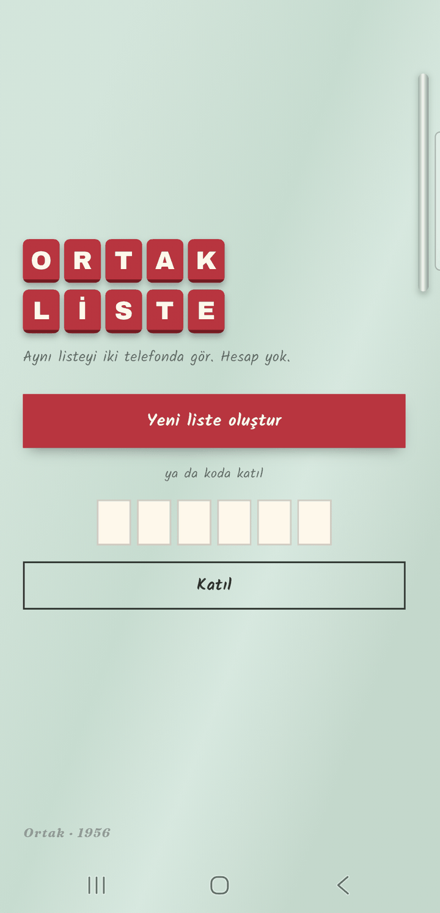
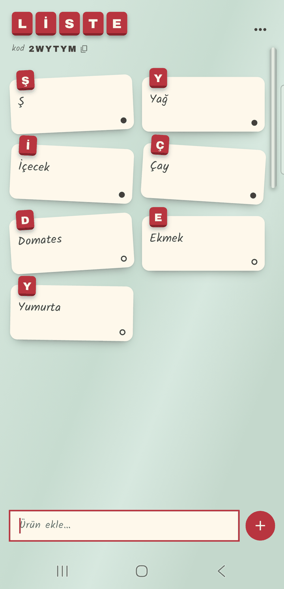
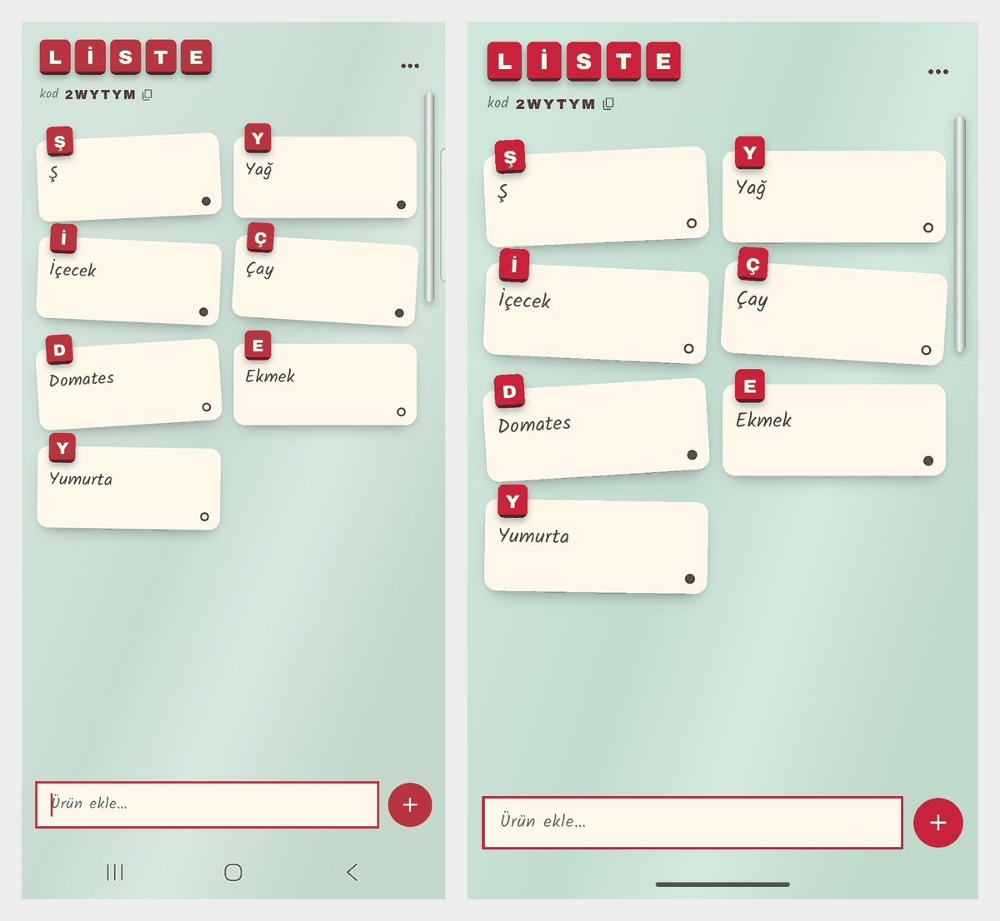

İki telefonda aynı alışveriş listesi. Biri "süt" yazıyor, öbürünün ekranına not olarak düşüyor. Hesap yok: listeyi açan 6 haneli bir kod görüyor, öbürü o kodu yazıp katılıyor.
01 — Ne yaptım
Liste bir buzdolabı kapısı. Her ürün krem bir not, tepesinde ürünün baş harfi kiraz renkli bir karo mıknatıs. Bir telefonda eklenen not öbüründe yukarıdan düşüyor. Alınan not soluyor, üstü çiziliyor, alta iniyor.
Notun köşesindeki işaret ekleyeni gösteriyor: dolu nokta sen, boş halka öbür kişi. Renk değil şekil, çünkü uygulama isim tutmuyor. İnternet yokken de ürün ekleniyor; bağlantı gelince iki telefon kendiliğinden eşitleniyor.


02 — Neyi bilerek yapmadım
Her biri makul bir sonraki adım. Hiçbiri iki telefonun aynı listeyi görmesini daha iyi yapmıyor.
03 — Bu hafta gösterdiğim teknik yetenek
Seride ilk kez bulut ve ilk kez birden çok kullanıcı var. Her telefon ilk açılışta sessizce bir kimlik alıyor (Firebase anonim giriş). Liste Cloud Firestore'da duruyor ve iki telefon da onu dinliyor: birinde yapılan değişiklik öbüründe bir iki saniye içinde görünüyor.
Kimin neyi okuyup yazabileceğine sunucudaki bir kural dosyası karar veriyor. Bu kuralları Firestore emülatöründe (bilgisayarımda çalışan sahte Firestore) 21 testle denedim.

04 — Aldığım karar
Google ile giriş daha "gerçek" görünüyordu. Telefon değişince hesap kalır, kimin kim olduğu bellidir. Ama dördüncü bir paket, imza parmak izi ve Google Cloud ayarı gerekiyordu — kurulum tek başına yarım gün.
Asıl soru: bu uygulamanın kimin kim olduğunu bilmesi gerekiyor mu?
Gerekmiyor. İki kişinin aynı listeyi görmesi yetiyor. Anonim giriş her telefona hiçbir şey sormadan bir kimlik veriyor; katılmak için 6 haneli kod yetiyor.
Bedeli: uygulama silinince kimlik de gidiyor, listeye kodla yeniden katılmak gerekiyor. Karşılığında uygulama ilk açılışta tek soru sormadan çalışıyor ve isim, e-posta tutmuyor.
05 — Nasıl doğruladım
Birim testleri saf mantıkta: kodun üretilmesi ve alfabesi (karışan 0/O, 1/I/L yok),
karodaki Türkçe baş harf ("incir" → "İ"; Dart'ın toUpperCase()'i bunu
yanlış yapıyor), sıralama ve ürün adının temizlenmesi.
Sonra telefon ve emülatör aynı listede: oluştur, kodla katıl, iki yönlü ekle / işaretle / sil, uçak modunda ürün ekleyip bağlantı gelince ikisinin eşitlendiğini gör.
Gereksiz sandığım bir ağ iznini kaldırdım. Uygulama açılışta çöktü: Firestore internetin gelip gittiğini o izinle izliyor. İzin geri geldi, gerekçesi yanına yazıldı.
İkincisi: yeni açılan liste "yüklenemedi" diyordu. Firestore yeni kaydı sunucu onaylamadan ekranda gösteriyor; ekran, sunucuda henüz olmayan listenin ürünlerini dinlemeye başlıyordu. Artık liste, ancak sunucu onaylayınca "var" sayılıyor.
06 — Ne öğrendim
"Gereksiz izni kaldırdım" diyebilmek için önce kaldırıp gerçek telefonda denemek gerekiyor. Kaldırdığım izin, veritabanının ihtiyaç duyduğu izin çıktı.
Kaydı sunucu onaylamadan göstermek uygulamayı anında hissettiriyor. Ama o kayda bağlı her şeyin onayı beklemesi gerekiyor.
İncele